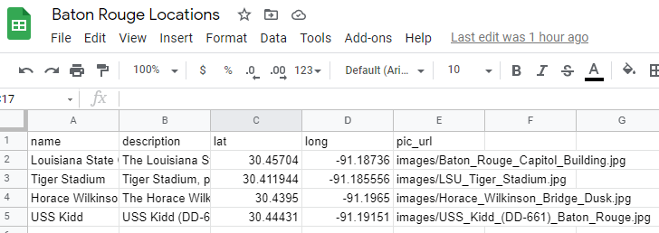
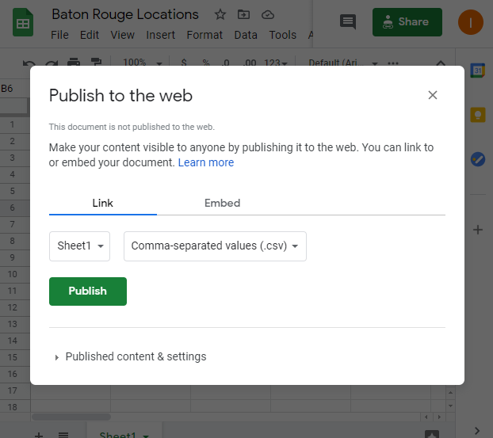
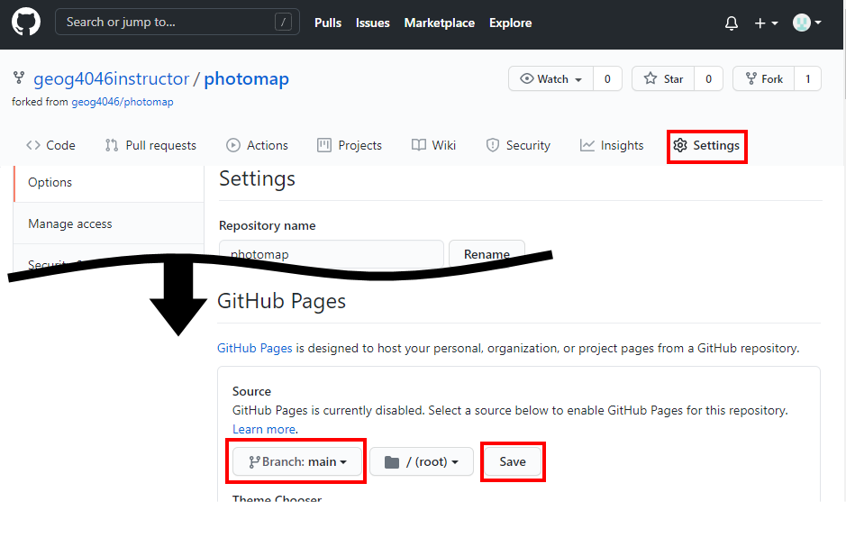
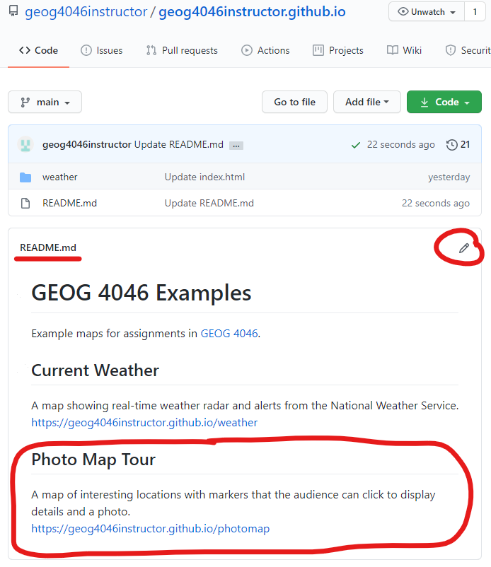
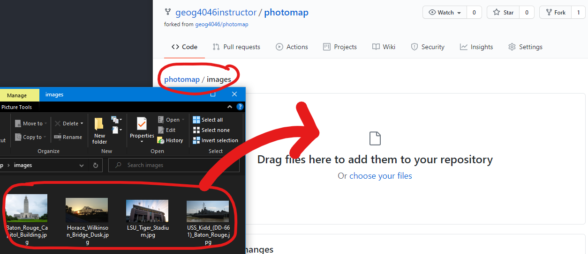
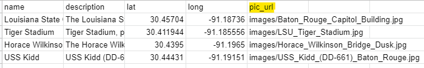

Assignment 11
Leaflet Map from Google Sheets
There are many repositories of free, open-source code on Github. For some projects, you don’t need to start from scratch, you can fork someone else’s project as a template.
In this assignment, we will create a web map by forking an existing project and changing only a few lines to make it work with our own data. The map will draw its data directly from a Google Sheets spreadsheet and update as the spreadsheet is modified.
Table of Contents
Finished Example
Data
This app will accept the URL to a spreadsheet in CSV format with the following attributes:
| Column name | Description |
|---|---|
| name | A short name for the location, to appear as the popup title |
| description | A sentence or two describing the location in more detail |
| lat | Latitude in decimal degrees |
| long | Longitude in decimal degrees |
| pic_url | The URL to an image that will be displayed in the popup |
These are some of the same columns used in the ArcGIS Online Story Map Tour template. That means you can use the same CSV from Assignment 3 or start fresh with different locations.
However, the rows and columns must be copied to a spreadsheet in Google Sheets so the app can connect to it. Changes made to the sheet will be reflected on the map when refreshed.
Steps
Part 1: Create a Google Sheet
- Create a new blank spreadsheet on Google Drive.
- You can either paste your CSV values from Assignment 3, which should still be saved in your ArcGIS Online account, or create new locations with
name,description,lat,long, andpic_urlcolumns. Other columns are not needed.
 - After you have locations entered in the sheet, click
File>Publish to the web, and selectSheet1andComma-separated values (.csv)in the dropdowns. You will be provided with a public URL, which should look like the URL below. Note theoutput=csvat the end.
https://docs.google.com/spreadsheets/d/e/long-ID-here/pub?gid=0&single=true&output=csv

We will copy this URL later, so keep the tab open for now.
Part 2: Clone a Github repo
- Sign into Github, go to the Photomap repository. “Photomap” is a simple web map application made for this exercise.
- Click
Fork. This asks you to make a copy of the project in your Github account as a new repository atyourusername/photomap. - After creating the forked repository, go to the
Settingstab and scroll down to Github Pages, which lets you publish a repository as a website. Selectmainand clickSave.

It might take a few minutes, but eventually your site will be live atyourusername.github.io/photomap. You can change the repository name in the settings to change the address. At the bottom of the settings page, you can delete the repository if needed. - Add a link to your live map in the
README.mdof youryourusername.github.iorepository, the same as “Try It” Step 3 in Assignment 10.

Try It
The “Photomap” web map should already work after forking it, but it will display example locations in Baton Rouge. Customize it by connecting to your own Google Sheets and photos, center and zoom the map accordingly, and choose a different basemap.
- To connect the map to your own Google Sheets, click on the
Codetab in Github for your photomap repository and click the filephotomap.js. Click the pencil icon to edit it. - Look for the line of code that saves a Google Sheets URL to a variable, beginning
var csvUrl...Replace the URL with your own sheet’s public URL from Part 1 Step 3. - You’ll also need to change the map center and zoom to focus on your own locations. You can use Google Maps to get latitude and longitude by right-clicking on the map in Google Maps. For zoom level, here is a rough guide:
- 4 fits the continental U.S.
- 8 fits Louisiana
- 13 fits Baton Rouge
-
Choose a basemap that is appropriate for your locations and the overall theme of your map. For example, if you have locations within walking distance or a short ride, a detailed street map might be useful. A topographic basemap could work well for hiking locations, and an imagery basemap goes well with a variety of maps.
See the Leaflet basemap demo for ideas and the code to add to your map. Note that some require signing up for a service.
The example basemap code in Photomap looks like this. You need to change it:
var basemap = L.tileLayer('https://basemap.nationalmap.gov/arcgis/rest/services/USGSImageryTopo/MapServer/tile/{z}/{y}/{x}', { maxZoom: 16, attribution: 'USGS' }).addTo(map);When you copy a basemap code sample from the Leaflet basemap demo, you will need to make sure it ends with.addTo(map);like the example above, or it won't be visible on the map. The semicolon goes at the very end of the line. - Next, deal with the photos. If you copied the CSV from Assignment 3, you will already have working images with a full URL in the
pic_urlcolumn of your spreadsheet. However, you might wish to remove your map’s dependence on images hosted on ArcGIS Online, and instead upload your photos to Github.- To add images to Github, go to the
Codetab of your photomap repository and click theimagesfolder. - If you have your own photos saved on your computer, you can choose
Add file>Upload files, then drag and drop the files from your computer to the page.Commit changes.
 - Then change your Google Sheet
pic_urlcolumn to use the pathimages/filename.jpg, wherefilenameis different for each location.

- To add images to Github, go to the
Checklist
- A fork of the “photomap” repository on Github.
- A live Github website published from the photomap repository.
- Map of locations loaded from your own Google Sheets spreadsheet (from Assignment 3 or new ones).
- Appropriate center and zoom.
- Popups showing location name, description, and photo.
- Choose your own basemap, not the “USGSImageryTopo” from the example.
- Link to this map in your README on Github.
Submit
-
A URL to your main repository page showing the README file with a link to your map. The URL you submit should look like
https://github.com/yourusername/yourusername.github.io. This is the same URL you submitted for Assignment 10.Your Assignment 10 and 11 maps should both be accessible from that page now.